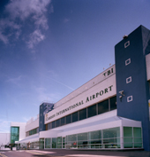

En avion
Situé à 15km de Cardiff, l'aéroport dessert Paris ainsi que Lorient et Toulouse. Des taxis vous attendent à la sortie de l'aéroport au niveau des arrivées. Vous pouvez également réserver directement un taxi soit en appelant au +44 (0) 1446 71147. De plus, un service de bus assure la liaison entre l'aéroport et le centre ville. Laéroport dispose également d'un coin pour les enfants, de boutiques et de restaurants. En outre 278 places de parking sont disponibles pour des stationnements de courte durée, 1 836 autres pour ceux de longue durée.